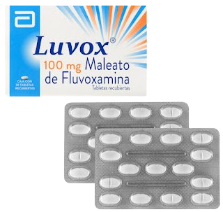

Escitalopram
La disminución de los síntomas depresivos demoran 2 a 6 semanas.
Mecanismo de Acción
Inhibidor selectivo de la recaptación de serotonina (5-HT), con alta afinidad por el sitio primario de unión.
Indicaciones
Depresión mayor
Trastorno obsesivo compulsivo
Trastorno de estrés postraumático
Ansiedad social
Contraindicaciones
Hipersensibilidad
Historia de manía
Concomitante con IMAO
Bajo peso
Crisis convulsiva
No tomar con pimozida
Niños y adolescentes < 18 años
Presentaciones
-
Comprimidos de 10 y 20 mg
Cuidados de enfermería
No administrar con otros antidepresivos.
Si el paciente toma escitalopram, esperar 7 días para tomar algún antidepresivo distinto.
Si el paciente ha tomado algún medicamento antidepresivo tiene que esperar 14 días antes de empezar a tomar escitalopram.
Dosis máxima 20 mg/día.
Tomar en las mañanas, a la misma hora todos los días.
Reducir la dosis progresivamente durante al menos una o dos semanas antes de suspender el tratamiento.
Efectos adversos
Frecuentes:Bruxismo, somnolencia, diarrea, sequedad de la boca, mareos, sofocos, dificultad en la atención, hiperhidrosis, inquietud, ansiedad.
Poco frecuentes:Disfunción sexual persistente, síndrome serotoninérgico, artralgia, mialgia, dolor torácico, maculopatía.
Fluoxetina
La disminución de los síntomas depresivos demoran 2 a 6 semanas.
Mecanismo de Acción
Inhibe selectivamente la recaptación de serotonina por neuronas del SNC.
Indicaciones
Depresión mayor
Trastorno obsesivo compulsivo
Bulimia nerviosa
Ansiedad social
Ataques de pánico
Contraindicaciones
Hipersensibilidad
Crisis convulsivas
Alteración de la función hepática
Primer trimestre del embarazo
Concomitante con IMAO
Presentaciones
-
Capsulas de 20 mg
-
Solución oral 20 mg / 5 ml
Cuidados de enfermería
No administrar con otros ISRS.
Dosis máxima 80 mg/día.
Dosis >20mg se puede dividir en 2 tomas.
Tener precaución si se utiliza en pacientes con frecuencia cardiaca baja persistente y/o antecedentes de sagrado.
Vigilar el nivel de glucosa si se administra en los pacientes con diabetes dependientes de insulina.
Iniciar con cuidado en pacientes con historia de convulsiones.
Efectos adversos
Frecuentes:Insomnio, cefalea, tensión, disminución de la libido, mareo, nauseas, vómitos, dispepsia (dolor o ardor en el estómago), diarrea, somnolencia, alteración de la atención, palpitaciones, sequedad en la boca, hiperhidrosis.
Poco frecuentes:Artralgia, prurito, hemorragia ginecológica, disminución del peso.
Fluvoxamina
Baja afinidad por receptores alfaadrenérgicos, β-adrenérgicos, histaminérgicos, colinérgicos muscarínicos, dopaminérgicos y serotoninérgicos.
Mecanismo de Acción
Inhibidor selectivo de la recaptación de serotonina por las neuronas cerebrales.
Indicaciones
Depresión mayor
Trastorno obsesivo compulsivo
Ansiedad somatizada
Contraindicaciones
Hipersensibilidad
Concomitante con IMAO
Combinación con tizanidina
Presentaciones
-
Tabletas de 100 mg
Cuidados de enfermería
No administrar con otros ISRS.
Dosis máxima 300 mg/día.
Dosis >50 mg dividir y tomar mayor concentración en la noche.
Supervisarse cuidadosamente en el paciente la aparición de síntomas de suicidio.
Evitar administrar en pacientes con epilepsia inestable.
Administrar en la mañana si hay insomnio.
Efectos adversos
Frecuentes:Anorexia, nerviosismo, somnolencia, temblor, vértigo, palpitaciones/taquicardia, diarrea, nauseas, vomito, diarrea, boca seca, mareo, dispepsia, hiperhidrosis, estreñimiento, hipotensión postural, insomnio.
Poco frecuentes:Disfunción sexual persistente, síndrome serotoninérgico.
Paroxetina
La disminución de los síntomas depresivos demoran 2 a 6 semanas.
Mecanismo de Acción
Inhibe específicamente la recaptación de 5-hidroxitriptamina por las neuronas cerebrales.
Indicaciones
Depresión mayor
Trastorno obsesivo compulsivo
Trastorno de estrés postraumático
Ansiedad generalizada
Ansiedad social
Contraindicaciones
Hipersensibilidad
Concomitante con IMAO
No tomar con pimozida o tioridazina
Primer trimestre del embarazo
Presentaciones
-
Comprimidos de 12.5, 20 y 25 mg
Cuidados de enfermería
Acatisia durante la primera semana.
Dosis máxima 50 mg/día.
Vigilancia de ideación suicida.
Administrar en una dosis por la mañana con alimento.
Cuando se decida suspender el tratamiento disminuir progresivamente la dosis a intervalos de una semana.
Efectos adversos
Frecuentes:Aumento del peso corporal, disminución del apetito, disminución de la concentración, cefalea, somnolencia, vértigo, insomnio, nauseas, diarrea, hiperhidrosis, sequedad de la boca, disfunción sexual, debilidad neuromuscular, estreñimiento.
Poco frecuentes:Bruxismo, astenia, temblor, palpitaciones, hipotension postural.
Sertralina
La disminución de los síntomas depresivos demoran 2 a 6 semanas.
Mecanismo de Acción
Actúa como Inhibidor selectivo de la recaptación de 5-HT (serotonina).
Indicaciones
Depresión mayor
Trastorno obsesivo compulsivo
Trastorno de estrés postraumático
Ansiedad social
Trastorno disfórico premenstrual
Contraindicaciones
Hipersensibilidad
Síndrome de segmento QT largo
Concomitante con IMAO
Concomitante con pimozida y linezolida
Presentaciones
-
Tabletas de 25, 50 y 100 mg
Cuidados de enfermería
No administrar con otros ISRS.
Dosis máxima 200 mg/día.
Tomar en las mañanas.
Valorar estado mental y función motora.
Toma de signos vitales incluida la temperatura.
Detectar la aparición de ideas de suicidio.
Efectos adversos
Frecuentes:Náuseas, vómito, diarrea, dispepsia, sequedad de la boca, mareos, parestesia, temblor, sinusitis, hiperhidrosis, pirexia, inquietud, ansiedad, cefalea, insomnio, somnolencia, temblor.
Poco frecuentes:Prolongación del intervalo QT y arritmia ventricular, disfunción sexual persistente, síndrome serotoninérgico.
Vortioxetina
Al igual que los ISRS convencionales, es capaz de aumentar los niveles de serotonina. Su acción sobre los diversos subtipos de receptores de 5HT le otorga unas propiedades características y hace que sea considerado un antidepresivo multimodal.
Mecanismo de Acción
No solo inhibe la recaptación de serotonina, como los ISRS, sino que también modula directamente varios receptores de serotonina en el cerebro.
Indicaciones
Episodios de depresión mayor
Contraindicaciones
Hipersensibilidad
Concomitante con IMAO
Presentaciones
-
Comprimidos de 10 y 20 mg
Cuidados de enfermería
Administrar el medicamento aproximadamente a la misma hora todos los días.
Detectar la aparición de cualquier signo o síntoma de Síndrome Serotoninérgico o Síndrome Neuroléptico Maligno.
Monitorear cambios en el estado de ánimo o cualquier ideación suicida, ya que el riesgo puede aumentar al inicio del tratamiento.
Efectos adversos
Frecuentes:Sueños anormales, mareo, prurito, náuseas, diarrea, estreñimiento, vómitos, hiperhidrosis, visión borrosa, temblor.
Poco frecuentes:Angioedema, urticaria, hemorragia (incluyendo contusión, equimosis, epistaxis, sangrado gastrointestinal o vaginal), reacción anafiláctica y erupción.